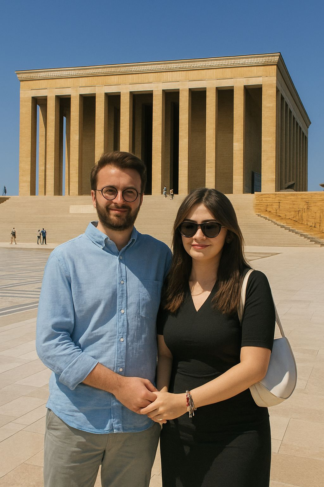
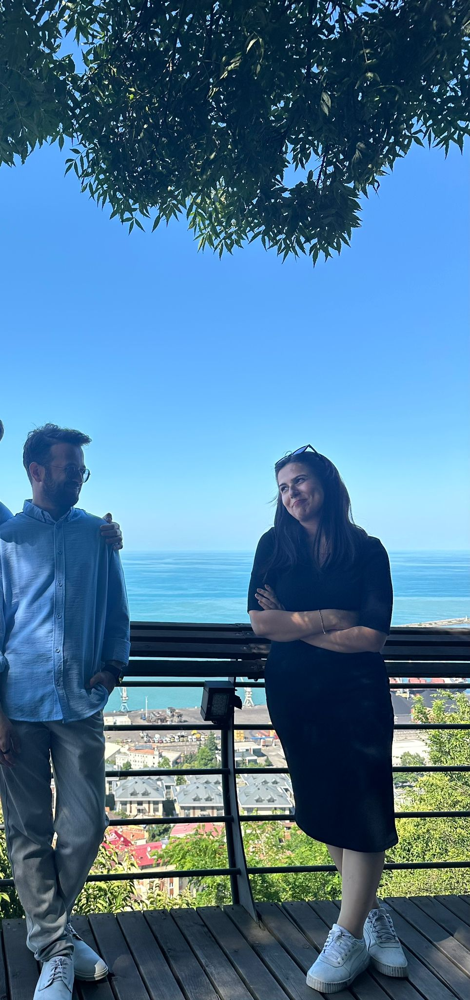
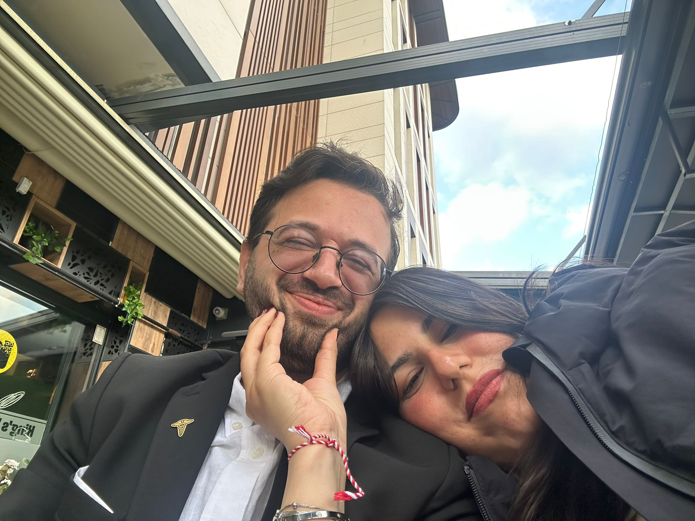
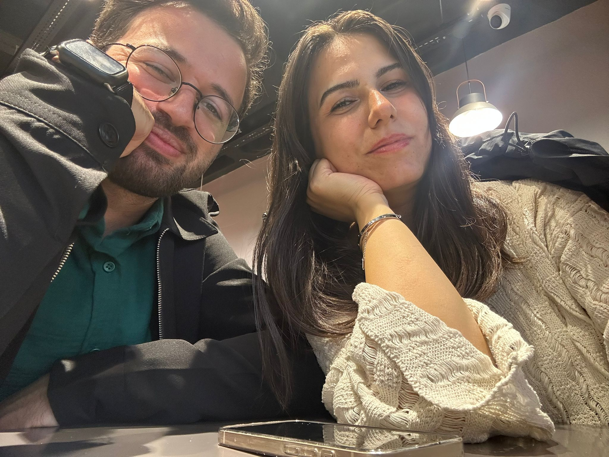
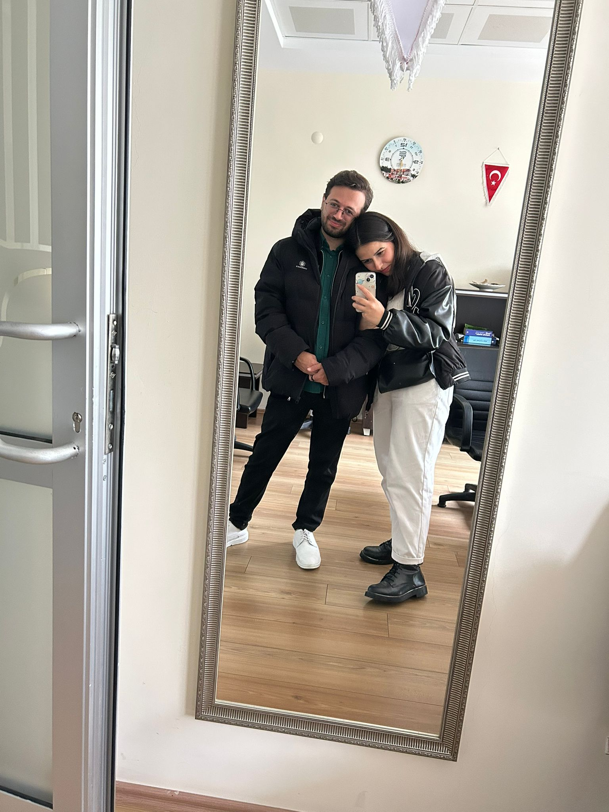
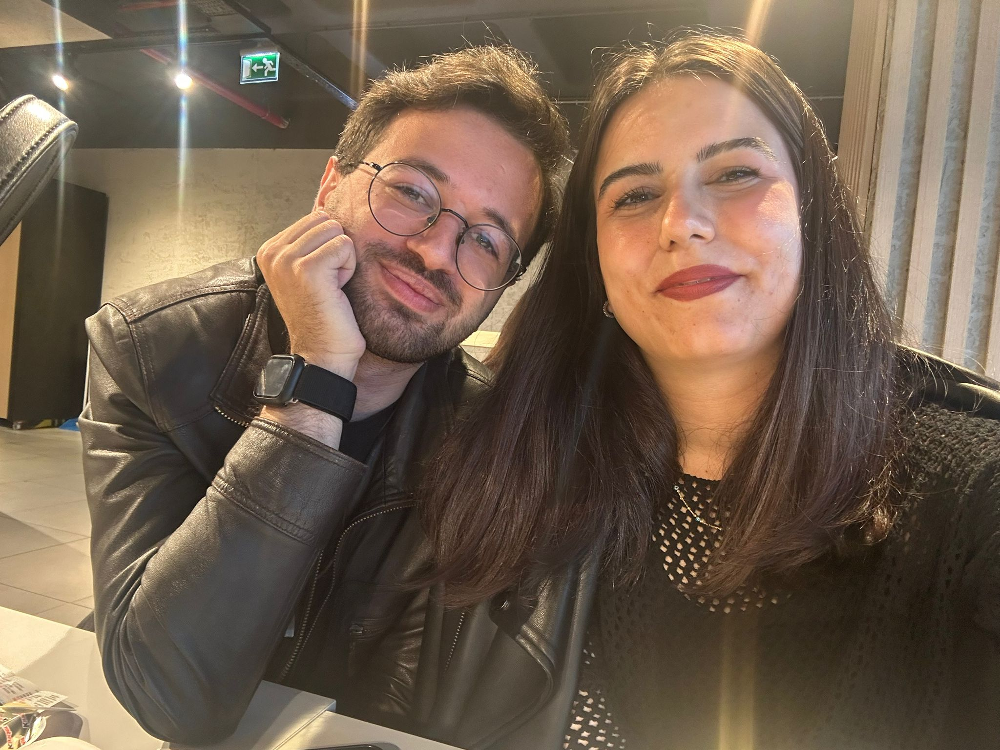
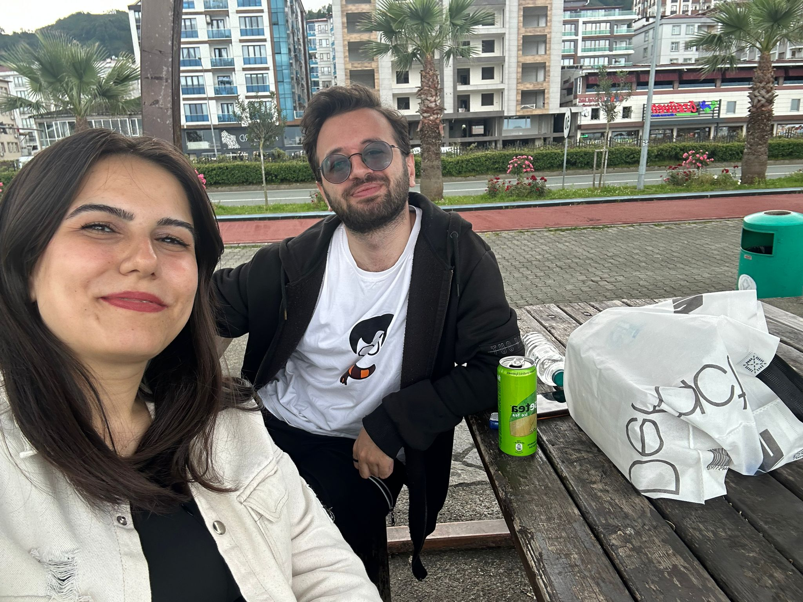

Seninle geçen her an, hayatımın en değerli anı oldu.
Ne olursa olsun kalbim hep seninle, sana bağlı.
Sana incittiysem, bunu telafi etmek için ömrüm var.
Gözlerindeki ışık, hayatımın en güzel rengi. 💜
Kalbim, ruhum, tüm benliğim sana ait...
Her nefesimde adını fısıldıyor içim.
Bir daha asla seni üzmek istemem.
Sonsuza kadar seninle olmak istiyorum... 🌸
Seni hâlâ çok seviyorum, inşallah bu zor günleri atlatırız ve tekrardan mutlu, huzurlu günlerimize döneriz.
Ben hâlâ umutluyum... Fotoğrafı geçme tuşu aşağıda kalabilir oradan sağ, sol yapabilirsin. küçük fotoğrafların üstüne tıklamayı da unutma.

Bu fotoğrafı o gün atacaktım nasip olmadı...

Hani sana söylemiştim ya daha ilk web sitesi yaptığımda sana hep böyle bakacağım diye, evet. Bakacağım... 💖

Damat 🥺

Tostçu Yaşar günümüz, ıslak ama bir o kadar özel ve güzel gün...

İlk sarıldığın gün, çok heyecanlanmıştım...


Hazırlıksız yakalamıştın beni hanımefendi ama yine de çok güzel bir gündü, her zamanki gibi.